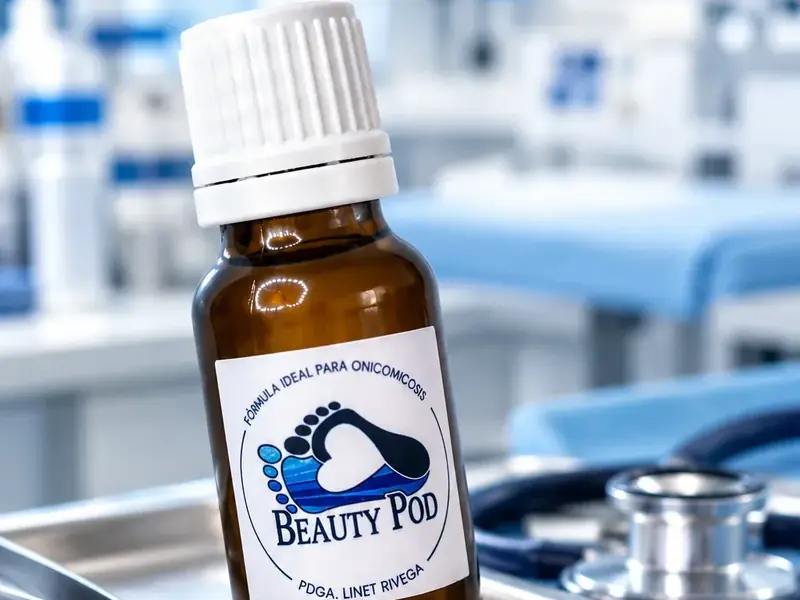
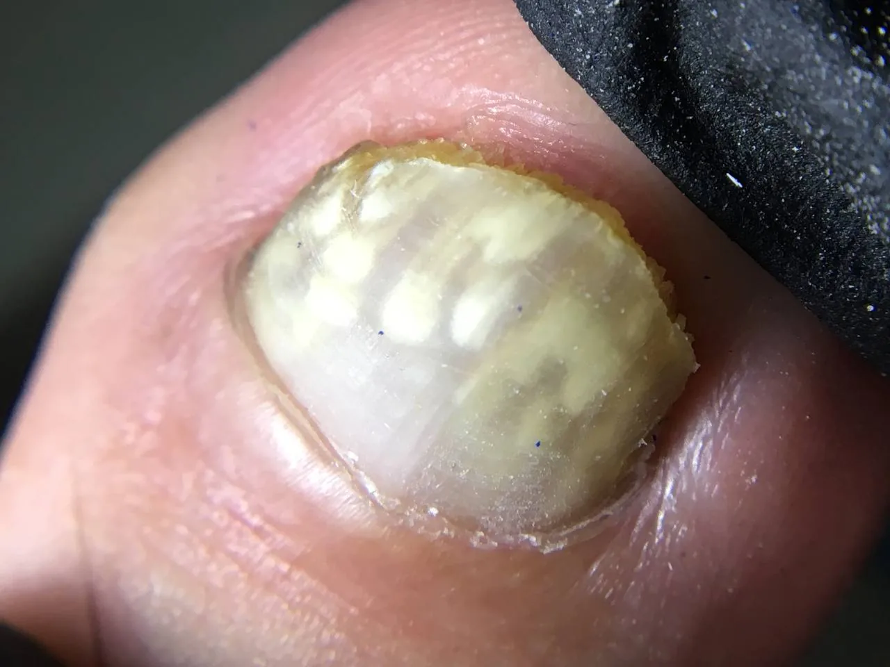

Una fórmula pensada para la onicomicosis
La Fórmula ELAN es un tratamiento desarrollado por la podóloga Linet R. Vega para quienes conviven con hongos en las uñas, incluidos los casos que se han vuelto resistentes a otros productos.
En BeautyPod la preparamos y la acompañamos con orientación podológica, porque tratar un hongo en la uña no consiste solo en aplicar un producto: también importa el diagnóstico, la constancia y los hábitos de cuidado del pie.

Sobre la Fórmula ELAN
La Fórmula ELAN combina las propiedades de la fitoterapia con la alopatía en beneficio de la piel y la uña. Sus aceites se asocian con ácidos podológicos en bajos porcentajes, y esa combinación potencia el efecto antifúngico.
Los ácidos actúan como fungistáticos y fungicidas: penetran en las células del hongo, alteran su membrana, su metabolismo y su homeostasis celular, y esto contribuye a frenar su crecimiento y desarrollo. Al mismo tiempo, los compuestos activos de origen vegetal, como los terpenoides y el terpinen-4-ol, también penetran en las células del hongo y afectan su membrana y su metabolismo, lo que ayuda a su eliminación.
Gracias a esta acción doble, la fórmula ayuda a detener el avance del hongo y a prevenir su propagación, de forma progresiva. Aun así, el tratamiento de las infecciones de las uñas requiere tiempo y persistencia, además de buena higiene y del desbaste mecánico realizado por un profesional.
Acción combinada: fitoterapia + ácidos podológicos en bajos porcentajes, junto con higiene y
desbaste profesional.
— PDGA. Linet R. Vega
Ficha del producto
Uñas
Fórmula ELAN
Tratamiento para hongos resistentes en las uñas.
Presentaciones: 15 ml o 30 ml
Escríbenos por WhatsApp para consultar el precio.
Disponible
Se vende únicamente tras una onicoscopía con resultado positivo.
Reservar onicoscopía por WhatsApp (se abre en una pestaña nueva)
¿Qué es la onicomicosis?
La onicomicosis es una infección de la uña causada por hongos. Es más frecuente en los pies, porque el calzado cerrado, el calor y la humedad crean un ambiente favorable para que se desarrollen.
Algunas señales que pueden indicar su presencia:
- Cambio de color de la uña: amarillento, blanquecino o marrón.
- Engrosamiento y aspecto opaco.
- Uña quebradiza, que se desmorona o se levanta del lecho.
- Deformidad o mal olor en algunos casos.
Estos signos no son exclusivos de los hongos: otras alteraciones de la uña pueden verse parecidas. Por eso conviene que un profesional confirme el diagnóstico antes de iniciar cualquier tratamiento.
Conoce más en nuestro artículo Onicomicosis y hongos en la piel.
Qué aporta la Fórmula ELAN
Está formulada para uso tópico, como parte de un tratamiento sostenido.
Enfoque específico
Pensada para onicomicosis, no como producto genérico para el cuidado de las uñas.
Para casos resistentes
Dirigida a quienes ya probaron otras opciones sin lograr los resultados esperados.
Formato práctico
Frasco en presentaciones de 15 ml o 30 ml, fácil de dosificar y de aplicar en casa.
Respaldo profesional
Elaborada por una podóloga, con diagnóstico clínico y seguimiento cada 15 a 21 días.
Ingredientes
Aceites de fitoterapia con terpenoides y terpinen-4-ol, y ácidos podológicos en bajos porcentajes.
Uso externo
Aplicar en el lecho afectado. No ingerir.
Indicaciones
- Tratamiento de la onicomicosis (infecciones fúngicas de las uñas) causada por dermatofitos, levaduras o mohos.
- Se usa bajo indicación y supervisión de un profesional.
- Incluye diagnóstico mediante onicoscopía inicial y diagnostico clínico.
Primero, el diagnóstico
Antes de usar la Fórmula ELAN, el podólogo realiza un diagnóstico clínico para confirmar que se trata de un hongo. El producto solo se vende si el resultado es positivo, porque otras alteraciones de la uña pueden parecerse a una micosis y no deben tratarse con este producto.
Importante: usada sin diagnóstico previo, la fórmula puede causar quemaduras y distrofia ungueal (alteración de la uña).
Administración y posología
- Higiene: lava, cepilla y seca muy bien la zona infectada.
- Uña corta y libre: la zona infectada debe estar corta y libre, sin uña larga ni hueca que cubra la lesión. El corte o desbaste lo realiza el profesional en consulta.
- Agitar: agita el frasco antes de cada uso.
- Dosificación: introduce un palito desechable en el frasco y escurre el exceso de producto en el borde.
- Aplicación: realiza 1 toque diario con una pequeña gota sobre la zona infectada, usando el palito. Deséchalo después de cada aplicación.
- Duración: continúa el tratamiento hasta que la uña infectada haya sido reemplazada por una uña sana.
- Alta: aunque ya no veas signos de infección, sigue aplicando hasta que el especialista haga las pruebas clínicas pertinentes y te dé el alta.
Muy importante: si la uña está larga y hueca, el producto no penetra y el tratamiento no funciona. Por eso la zona infectada debe mantenerse siempre corta y libre, con el desbaste periódico del profesional.
Ten en cuenta: el producto puede teñir de amarillo la uña y la zona donde se aplica.
Posibles causas de atraso en el tratamiento
Se pueden experimentar atrasos en el tratamiento por las siguientes causas, que se pueden evitar:
- Calzado apretado usado recientemente.
- Presión o golpes sobre la uña.
- Uso de algún instrumento para limpiar debajo de la lámina ungueal.
- Exceso de humedad en los pies.
- Uso de instrumentos contaminados o sin esterilizar de otras veces.
- Uso de esmaltes.
Estas causas pueden hacer que la uña se ahueque, es decir, que se separe del lecho. En algunos pacientes ha ocurrido, casi siempre por estos motivos. Cuando pasa, el producto no penetra bien, por lo que el profesional debe retirar la parte hueca para que la zona infectada quede corta y libre.
Seguimiento y supervisión
Durante el tratamiento, el paciente acude a consulta cada 15 a 21 días, según estime el especialista, para la limpieza podológica y el control de la evolución.
Los hongos en las uñas son lentos de tratar: la uña dañada no se “cura”, sino que se reemplaza poco a poco por una uña nueva y sana que crece desde la base. En las uñas de los pies este proceso puede tardar muchos meses. Los resultados varían según cada persona, el grado de afectación y la constancia.
Contraindicaciones y cuidados durante el tratamiento
No limar ni cortar en casa
No limes ni cortes la lámina ungueal por tu cuenta: el desbaste lo hace el profesional.
No mezclar medicamentos
No uses otros medicamentos que puedan reaccionar con el producto.
Evita la humedad
Mantén los pies secos, sobre todo entre los dedos.
Evita el calzado justo
Usa calzado holgado y que permita la transpiración.
Instrumental estéril
Evita usar instrumental usado anteriormente sin esterilizar.
El alcohol no esteriliza
Limpiar con alcohol no sustituye la esterilización del instrumental.
Precauciones
- No apto para diabéticos con neuropatía periférica o pie de riesgo.
- Si la infección no mejora o empeora después de usar el producto, consulta a tu podólogo.
- Puede teñir de amarillo la uña y la zona donde se aplica.
- Evita el contacto con los ojos, la nariz y la boca.
- Mantén el producto fuera del alcance de los niños.
Lo más importante
Tratar la onicomicosis exige paciencia, constancia y buen diagnóstico. La Fórmula ELAN está pensada para acompañarte en ese proceso con un producto específico y respaldo podológico, junto con los hábitos de higiene que ayudan a mantener la uña sana.
Mira el producto en nuestra tienda, conoce todo lo que tratamos en la página de podología o lee más en el Blog de BeautyPod.